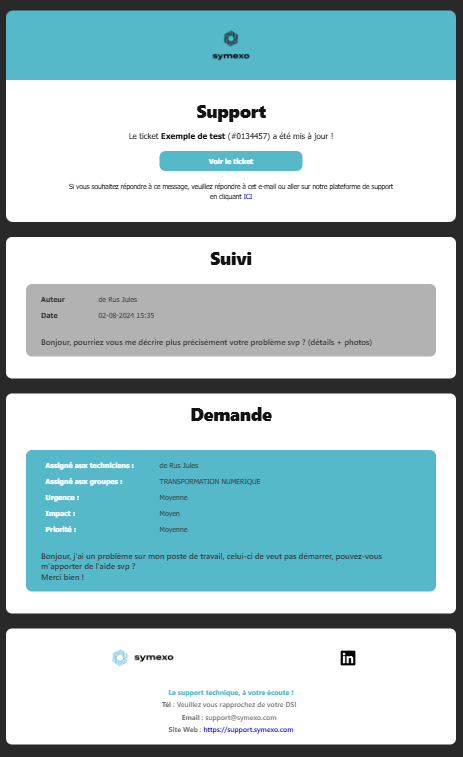
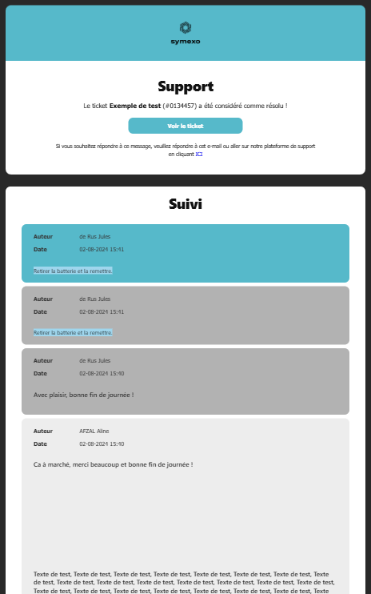
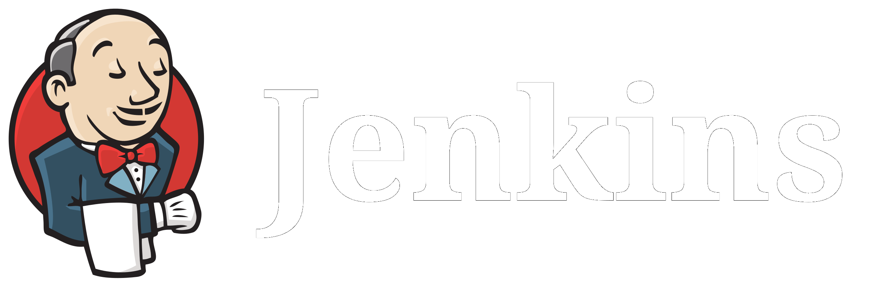
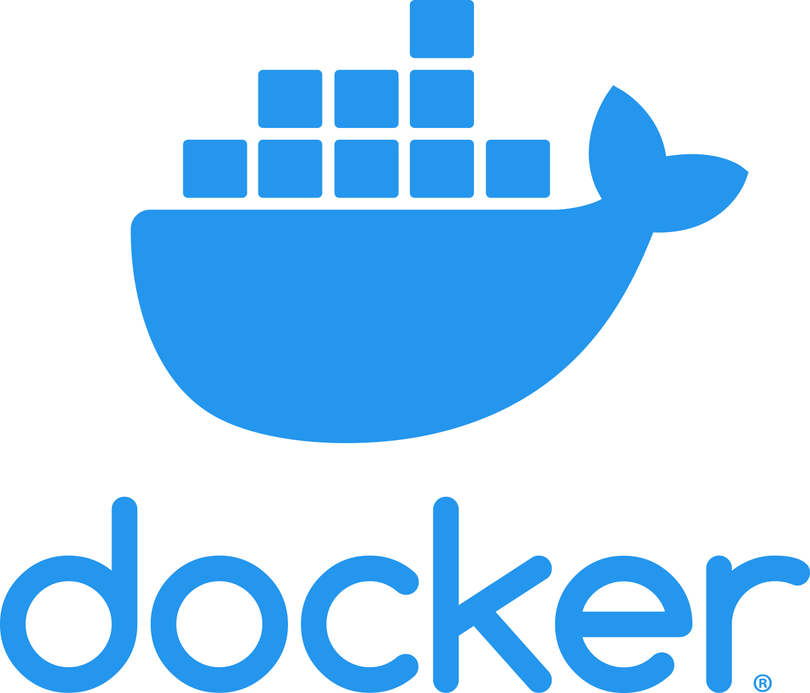
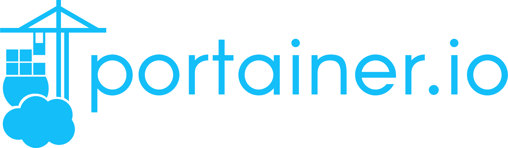
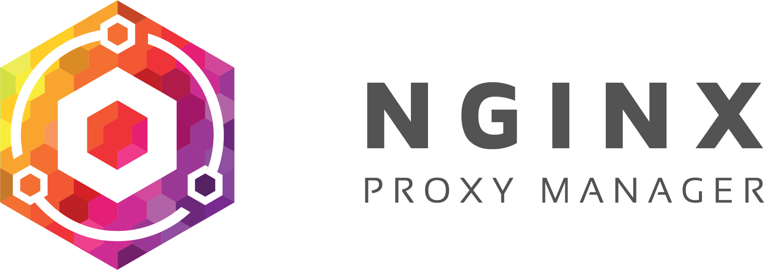
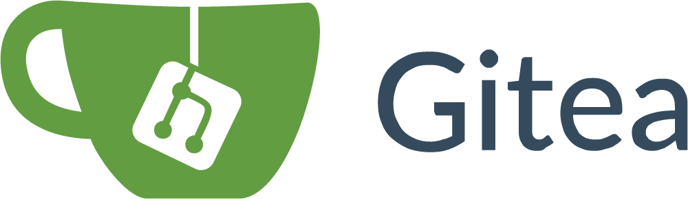
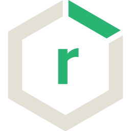

Jules de Rus
Tek 2
Dans le cadre de mon stage j’ai pu intégrer Symexo Balma, cette entreprise dont le siège social se trouve à Balma et qui est située aussi à Montpellier, Paris, Beauvais, Angers Poitiers, Niort, Cahors, Foix, Chalon-Sur-Saône, Nantes, Rodez, Bordeaux et Metz, est spécialisée dans l’infogérance : l’infogérance consiste à gérer les tâches informatiques confiées par une entreprise à un prestataire extérieur, ici, c’est Symexo. Mais Symexo s’occupe aussi d’équiper ses clients en matériel informatique tout en les infogérant et leur offrant un support de qualité ; tout ceci en restant le plus sobre numériquement et écologiquement.
Dans cette entreprise, nous sommes divisés en différents services allant des services d’Entretien et de Support, jusqu’au service de Commerce et Marketing en passant par la Cybersécurité et la Gestion de Projet et bien plus encore. A ces services viennent s'ajouter des filiales comme Sympro, qui est plus dédiée aux indépendants. J'ai intégré le service de la Transformation Numérique, dont le but est d’offrir une expérience informatique plus propre, plus belle, plus simple, intuitive et pratique… que ce soit aux clients ou aux autres services de l’entreprise.
Le service est composé de 3 développeurs, Julien ALBURQUERQUE qui est aussi le responsable du service, Julien CORDEAU ingénieur développeur et moi-même, le stagiaire. Il y a aussi Marion GAUDEL qui occupe un poste d'Assistante Fonctionnelle Métier et enfin Céline MONEL qui est Formatrice/Cheffe de projets. Le Président Directeur Général est Stéphane VINAZZA et le Directeur Général Adjoint, Marc TAMBURRINI.
Hiérarchie par Jules de RusDans ce service, j’ai pu participer à différents de projets dont deux principaux :
| Langages/Outils Utilisés | Description |
|---|---|
| HTML | Création de documents, souvent des pages Web |
| CSS | Mise en forme de documents HTML |
| GLPI | (Gestionnaire Libre de Parc Informatique), logiciel de gestion des services/parcs informatiques |
| Balises GLPI | Balises de conditionnalité et de récupération d'informations |
| Visiativ Process | Logiciel d'automatisation et gestion de processus métier |
| JAVA | langage de programmation polyvalent, utilisé pour développer une large gamme d'applications et de systèmes. |
Quand un client commande du Matériel, nous devons lui livrer, pour cela nous devons remplir un bon de livraison puis des fiches de livraison avec les informations le concernant. Avant, les informations étaient rentrées à la main, maintenant, les fiches de livraisons sont générées automatiquement à partir du bon de livraison.
Dans l'espace client Symexo, les clients peuvent signaler des incidents, des problèmes ou autre sur le matériel ou les prestations que nous leur avons fournies. Pour cela, nous mettons en place un suivi par mail sous forme de notifications à chaque mise à jour des tickets ouverts.
| Langages/Outils Utilisés | Utilité |
|---|---|
| HTML | Création du corp des notifications |
| CSS | Mise en forme des notifications |
| GLPI | Utilisation du service de gestion de tickets et de notifications |
| Balises GLPI | Conditionnalité d'affichage et récupération d'informations nécessaire au remplissage des notifications |
Quand les clients ouvrent des tickets sur l'espace client, nous mettons en place un suivi par notifications mail.
J'ai dû refaire les notification de zéro en mettant en place des modèles qui s'adaptent via des conditions aux différents types de notifications (ouverture du ticket, mise à jour du ticket, solution proposée, solution approuvée et enfin clôture du ticket). J'ai fait deux modèles de notifications, un seulement pour la clôture et un pour toutes les autres actions.
Pour cela, j'ai utilisé le logiciel GLPI (Gestionnaire Libre de Parcs Informatiques) qui m'a bien facilité les choses car il est aussi fait pour ce genre de tâche... Cependant j'ai tout de même rencontré quelques problèmes dont nous parlerons plus loin.
Voici l'interface qui va nous permettre de modifier le modèle de notification sélectionné, nous avons plusieurs options dans chaque menu ; ici nous pouvons lui donner un nom, le classer dans un type, insérer des commentaires mais surtout du CSS, le langage qui va permettre de donner un style à notre mail. Aussi, nous avons un menu "Traduction de modèle" auquel nous allons nous intéresser ci-après.
Ici, nous pouvons modifier tout ce qui est relatif à la personnalisation du corps du mail avec du language HTML. Cette petite interface va nous permettre de mettre en forme le modèle avec un éditeur intégré, avec lequel nous pouvons insérer du texte, des tableaux, images, liens, mais surtout du code. Personnellement je n'ai pas utilisé l'éditeur car celui-ci n'est pas fidèle, j'ai préféré tout faire en code et le tester directement sur chrome. Mais le tester sur chrome limite seulement au visuel du mail, et comme je vous l'ai dit, ce modèle va devoir s'adapter à la situation en changeant de visuel en fonction de l'état du ticket...
C'est grâce à cette magnifique interface et au menu "+ Créer un ticket" que nous allons pourvoir créer, gérer et attribuer des états à nos différents tickets.
Les modèles GLPI peuvent être universels grâce aux différentes variables que peut fournir GLPI, nous pouvons les reconnaître car elles sont entourées de deux hashtag "##VARIABLE##", par exemple il y a "##ticket.author##" qui sera par la suite remplacée par le nom de l'auteur du ticket. Il y a aussi des méthodes de conditions ou de boucle telles que "##IFticket.action=création du ticket##" qui permet d'exécuter le code suivant seulement si le ticket vient d'être créé ou encore "##FOREACHfollowups##" qui va nous permettre d'exécuter du code pour chaque suivi qui existe, comme par exemple les afficher.
Comme dit précédemment, j'ai dû créer deux modèles, un pour la clôture, et un pour le reste. À la base, je ne voulais faire qu'un seul modèle pour des raisons de simplicité d'usage, mais seulement, la conditionnalité dans GLPI n'est pas au point, quand on met un "##ELSE...##" après un "##IF...##", parfois ça ne marche pas et ça casse toutes les conditionnalités sous jacentes, pour cette raison, j'ai dû créer un modèle uniquement pour la clôture pour éviter une trop grande complexité de code dûe à la grande différence entre les deux.
Dans ce modèle classique, nous avons toutes les actions à part la clôture qui y sont intégrés. Il y a 4 bulles principales, une contenant toutes les informations relatives au ticket, l'autre contenant le suivi, une la demande et enfin la dernière contient les informations de Symexo. Il ya plusieurs bulles de suivi car chacune correspond à une action en particulier.
Passons aux exemples :
Ici, nous avons créé un ticket, nous avons 3 bulles, une avec les informations de celui-ci, un avec la demande de base et le dernier contenant les informations de Symexo.
Quand un ticket est mis à jour, il génère un suivi, le suivi a 4 bulles, dans celle qui se rajoute (Suivi), nous avons répertorié tous les suivis de ticket.
Quand il y a des messages de différentes personnes (nouveau suivi), ces messages sont différenciés par deux couleurs différentes, chacune attribuée à une personne. Nous pouvons aussi intégrer des images sans perte de qualité du suivi.
Quand une solution est proposée, le texte dans la bulle "Support" change et la solution est dans une bulle bleue.
Quand un ticket est clôturé, il change beaucoup : dans la bulle "Support", le texte change et une enquête de satisfaction est intégrée ; La bulle du dessous change de nom, maintenant c'est "Solution" et la solution approuvée est affichée dans une bulle verte.
| Langages/Outils Utilisés | Utilité |
|---|---|
| Visiativ Process | Création de processus métier, remplissage de formulaire |
| JAVA | Récupération et manipulation des informations des formulaires pour générer des documents via Apache POI / Complétion automatique de champs de formulaires. |
| Langages/Outils Utilisés | Description |
|---|---|
| Bash | Langage de manipulation du système informatique |
| YAML | Langage de configuration |
| Docker | Plateforme permettant de créer, déployer et gérer des conteneurs légers et isolés, qui regroupent une application et ses dépendances |
| Portainer | Interface graphique de gestion d'environnements Docker complet (Images, Conteneurs, Stacks, Volumes, Network) |
| Gitea | Plateforme de gestion de code source légère et auto-hébergée |
| Gitea Actions | Fonctionnalité de Gitea permettant l'automatisation de workflows de développement directement au sein de la plateforme |
| Nginx Proxy Manager | Interface graphique permettant de gérer des serveurs proxy basés sur Nginx |
| SonarQube | Plateforme d'analyse de code qui permet de mesurer la qualité du code source et de détecter des problèmes tels que des bugs, des vulnérabilités et des mauvaises pratiques de programmation |
| Sonatype Nexus Repository Manager | Outil de gestion de dépôts de composants logiciels. Il permet de stocker, gérer et distribuer des artefacts logiciels comme des bibliothèques, des dépendances, et des images de conteneurs |
Dans le service de transformation numérique, pour développer des applications ou autre, nous avons une usine logicielle, un regroupement de logiciels qui fonctionnent ensemble pour nous simplifier la vie (comme un écosystème)... C'est à dire, quand nous envoyons notre code sur Gitea, celui-ci est envoyé sur Jenkins qui est un logiciel qui permet de le déploiement du code sur Sonarqube et Archiva (similaire à Nexus Repository Manager). Donc dans l'ancienne usine logicielle nous utilisions les logiciels suivants : Gitea, Jenkins, Sonarqube, Archiva.
Aujourd'hui, nous avons choisi d'abandonner certains logiciels pour d'autre, nous utilisons maintenant : Gitea, Gitea actions (fonctionnalité de Gitea), Sonarqube et Sonatype Nexus Repository Manager. Nous avons donc abandonné Jenkins pour les Gitea action et Archiva pour Nexus Repository.
Pour faire en sorte que l'écosystème prenne moins de performances et qu'il soit plus facile à gérer, nous avons tout dockerisé, chaque application est contenue dans un conteneur docker, certains peuvent communiquer entre eux comme par exemple celui des Gitea Actions et de SonarQube.
Nous avons remplacé Jenkins par les Gitea actions car tout ce que nous avons besoin de faire sur Jenkins (vérifier la compilation et envoyer le code sur Sonarqube et Nexus Repository), nous pouvons le faire avec les Gitea action, pour retirer de la complexité à l'écosystème et économiser en performances ; nous avons choisi de l'abandonner.
Archiva n'était tout simplement pas un logiciel que nous pouvions dockeriser, de plus, il est compliqué à mettre à jour et pas très intuitif ni esthétique. Sonatype Nexus, lui, est dockerisable, ce qui fait qu'il est beaucoup plus facile à gérer, de plus il est très intuitif et plutôt joli.
Dockeriser l'usine logicielle nous a permis de gagner en portabilité, en facilité de gestion, en sécurité et en performance. Vu que les applications sont portées dans des conteneurs, nous pouvons à tout moment les arrêter et les changer de place grâce à la stack qui le précède. Le logiciel Diun va pouvoir nous prévenir dès qu'une mise à jour est disponible sur une application, ce qui fait gagner beaucoup de temps car quand nous voulons mettre à jour une application, nous n'avons qu'à redémarrer son conteneur ! De plus, toutes les données sont stockées dans des volumes inaccessibles par les applications non autorisées ou non liées, ce qui garantit la sécurité des données de l'application. Enfin, vu que chaque application est exécutée dans un conteneur sans OS, cela est beaucoup moins énergivore ; chaque conteneur contient seulement ce dont l'application a besoin pour fonctionner, économisant ainsi beaucoup de performances !
Pour faire fonctionner tout cet écosystème correctement et rendre une bonne expérience utilisateur, nous devons faire en sorte de simplifier l'accès aux outils, de les sécuriser et de les optimiser ; Pour cela, nous avons utilisé Docker, Portainer et Nginx Proxy Manager.
Docker, comme vu précédemment, est un outil de conteneurisation de logiciel, il permet d'exécuter chaque logiciels indépendamment avec d'installé seulement ce que le logiciel à besoin, ce qui optimise la consommation de ressource par logiciels. De plus, il sécurise chaque applications car, sauf si elles y sont autorisées, elles ne peuvent pas communiquer ensemble ; Aussi, chaque applications ont leurs volumes personnels dans lesquels elles vont pouvoir stocker toutes leur données, ce qui simplifie la gestions de celles-ci.
Portainer est un outil permettant de centraliser et de gérer tout un environnement docker (stacks (compose), images, conteneurs, volumes, networks) dans une application Web graphique et intuitive. C'est le deuxième logiciel de base à installer après docker pour que notre usine logicielle fonctionne correctement. D'ailleurs, ce logiciel tourne aussi dans un conteneur !
Nginx Proxy Manager nous a permis de rendre l’expérience utilisateur plus agréable, mais surtout plus sécurisée. Grâce à ce logiciel, à un DNS configuré précédemment et un certificat SSL valide, nous avons pu donner à notre application web à laquelle nous pouvions de base accéder via son ip, un nom de domaine ! Par exemple, pour accéder à Gitea, au lieu d'aller sur http://10.2.1.70:3000 (adresse IP factice) nous pouvions aller sur https://code-repo.symexo.com, de même pour SonarQube : https://code-quality.symexo.com et enfin pour Nexus Repository : https://code-artifacts.symexo.com. Aussi, grâce au proxy, les applications seront protégées des attaques directes, celui-ci jouera le role du garde de la porte vers chaque applications, personne ne pourra directement accéder à celles-ci. Ce logiciel est à configurer en suivant de l'installation de Gitea, SonarQube et Nexus Repository.
Gitea est un instance de Git parmi tant d'autres, nous pouvons par exemple la comparer à GitHub ou à GitLab ou même à BitBucket. La raison pour laquelle nous l'avons choisi est que ce logiciel est open source et que nous pouvons l'héberger en local, ce qui garanti une sécurité de nos données et de celles nos clients ; Aussi, nous ne dépendons pas d'internet, tout ce que nous avons besoin pour travailler est un réseau local fonctionnel.
SonarQube est un outil de vérification de qualité de code, via des algorithmes propres à chaque langage, il va déterminer la qualité (soit la complexité, les mauvaises pratique, la duplication de code et les bugs/vulnérabilités potentiels) de celui-ci. Une fois les vérifications faites, grâce à l’extension "SonarLint" disponible sur VsCode, il va nous avertir des différents problèmes que nous pourrions résoudre dans notre code. C'est vraiment un très bon outil pour continuer à fournir un code de qualité à nos clients !
Sonatype Nexus Repository Manager est un espace de stockage des artefacts que va produire votre code, que ce soit les librairies (.jar/.a) ou les fichiers de configuration (xml/.h). Nous avons créer sur ce logiciel un groupe symexo contenant un dépôt "Proxy" qui va nous permettre d'aller chercher les dépendances sur un dépôt en ligne définit si celles-ci ne sont pas disponible dans les autres dépôts du groupe. En ce qui concerne les dépôts locals, nous en avons configurer deux, un pour les releases et un pour les snapshots.
Avant toute chose, toute installation de logiciels, mon collègue à dû configurer une machine virtuelle sur VMware pour héberger toutes les applications. Celle-ci tourne sous Debian 12 sans interface graphique et nous lui avions de base allouer 4vCPU et 8Go de RAM, cependant, durant les tests des différents logiciel nous avons dû la faire évoluer...
Nous avons ensuite installer Docker, celui-ci est absolument nécessaire au bon fonctionnement de notre usine, sans lui il n'y a rien.
Pour l'installer nous avons suivis les étapes suivantes :
Les détails de code sont disponible dans la documentations associée ici
Une fois que docker à été installé, nous avons pu installer Portainer pour installer, configurer et gérer tous nos futur conteneurs depuis une interface graphique.
Pour l'installer nous avons tout simplement eu à entrer une commande docker :
docker run -d -p 9000:9000 --name portainer \
--restart=always \
-v /var/run/docker.sock:/var/run/docker.sock \
-v portainer_data:/data \
portainer/portainer-ce:latest
Cette commande va lancer un conteneur se nommant "portainer" exposant le port 9000 en se basant sur l'image "portainer/portainer-ce:latest" et stoquant ses informations dans le volume "/data" du conteneur et "/portainer_data" sur votre machine !
Pour de plus précises informations vous pouvez aller voir la documentation associée
L'interface graphique ce présente sous cette forme :
Avec cette interface nous pouvons accéder simplement à tous les composants de notre environnement docker, les éditer, les déployer, les stopper, les supprimer et encore bien d'autres actions...
version: "3"
networks:
gitea:
external: false
services:
server:
image: gitea/gitea:latest
container_name: gitea
environment:
- USER_UID=1000
- USER_GID=1000
- GITEA__database__DB_TYPE=mysql
...
- GITEA__log__LEVEL=Error
- GITEA__indexer_REPO_INDEXER_ENABLED=true
restart: always
networks:
- gitea
volumes:
- ./gitea:/data
- /etc/timezone:/etc/timezone:ro
- /etc/localtime:/etc/localtime:ro
ports:
- "3000:3000"
- "8443:443"
- "222:22"
depends_on:
- db
db:
image: mysql:8
restart: always
environment:
- MYSQL_ROOT_PASSWORD=gitea
- MYSQL_USER=gitea
- MYSQL_PASSWORD=gitea
- MYSQL_DATABASE=gitea
networks:
- gitea
volumes:
- ./mysql:/var/lib/mysql
Dans ce compose, nous instancions une image et un conteneur Gitea et un sql8 pour stocker les configuration, les dépôts et les utilisateur que nous créerons plus tard dans Gitea. Toutes les variables sont optionnelles, nous les avons mise car notre configuration les demande.
Des précisions supplémentaires sont disponibles dans la documentation associée, vous pouvez y accéder en cliquant ici !
C'est dans ce menu que j'ai pu configurer ma clé SSH
Pour plus d'informations, vous pouvez vous rendre sur la documentation associée
Les Gitea actions sont une fonctionnalité de Gitea permettant de faire du "CI/CD" (intégration continue/livraison ou déploiement continu), en bref ça va nous permettre de faire un peu ce qu'on veut avec notre code une fois qu'il est envoyé sur Gitea, que ce soit test de compilation, test classique ou encore envoi sur différentes plateformes, beaucoup de choses sont possible.
Pour plus de précisions vous pouvez aller regarder la documentation associée en cliquant ici !
Pour faire l'installation, j'ai dû suivre les étapes suivantes :
version: "3.8"
services:
runner:
image: gitea/act_runner:latest
deploy:
resources:
limits:
cpus: "16"
memory: "32g"
environment:
CONFIG_FILE: /config.yaml
GITEA_INSTANCE_URL: "http://10.2.1.70:3000"
GITEA_RUNNER_REGISTRATION_TOKEN: "${TOKEN}"
GITEA_RUNNER_NAME: "PortainerRunner"
GITEA_RUNNER_TYPE: "instance"
volumes:
- ./config.yaml:/config.yaml
- ./data:/data
- /var/run/docker.sock:/var/run/docker.sock
- /var/lib/docker/volumes/m2Directory:/mnt
Ici, j'ai limité l'utilisation CPU et RAM à 16cpus et 32Go pour ne pas saturer le reste du système en cas de trop grosse consommation de performances.
Pour récupérer le token j'ai dû me rendre dans le menu des exécuteurs sur Gitea et le récupérer en cliquant sur "Créer un nouvel exécuteur". Tout est détaillé sur la documentation tout en bas.
Pour plus de détails sur comment je m'y suis pris, vous pouvez aller vous la documentation associée, la partie consacrée à la configuration des Gitea Action se trouve tout en bas.
Malheureusement j'ai eu un petit problème...
Le Runner, à son premier lancement, regarde s'il n'y a pas un fichier de configuration à sa racine, sinon il en crée un ; Mais quand il le crée, souvent il crée un répertoire au lieu d'un fichier, ce qui fait que quand il essaie de l'ouvrir en tant que fichier, il n'y arriver pas. J'ai donc dû arrêter le conteneur, remplacer ce dossier par un fichier du même nom et relancer le conteneur.
Après Gitea j'ai directement pu installer SonarQube, c'est à peu près le même principe que Gitea sauf que c'est plus simple, il n'y a eu à faire quasiment aucune configuration, j'ai juste dû créer la stack avec le compose ci-dessous, la déployer puis aller chercher le token SonarQube.
version: "3"
services:
sonarqube:
image: sonarqube:community
depends_on:
- db
environment:
SONAR_JDBC_URL: jdbc:postgresql://db:5432/sonar
SONAR_JDBC_USERNAME: sonar
SONAR_JDBC_PASSWORD: sonar
volumes:
- sonarqube_data:/opt/sonarqube/data
- sonarqube_extensions:/opt/sonarqube/extensions
- sonarqube_logs:/opt/sonarqube/logs
ports:
- "5000:9000"
db:
image: postgres:12
environment:
POSTGRES_USER: sonar
POSTGRES_PASSWORD: sonar
volumes:
- postgresql:/var/lib/postgresql
- postgresql_data:/var/lib/postgresql/data
volumes:
sonarqube_data:
sonarqube_extensions:
sonarqube_logs:
postgresql:
postgresql_data:
Dans ce compose, j'ai instancier une image et un conteneur SonarQube et un Postgres12 pour stocker les utilisateur et le code envoyé.
Dans cette fenêtre, j'ai pu créer mon token en renseignant le nom, le type et le temps d'expiration de celui-ci
Si vous souhaitez avoir plus de détails, la documentation associée est ici !
Pour Nexus Repository, c'est tout pareil sauf que quand on se connecte pour la première fois, il faut aller chercher le mot de passe à un endroit spécifique sur le système...
version: "3"
services:
nexus:
image: sonatype/nexus3
restart: always
volumes:
- "nexus-data:/sonatype-work"
ports:
- "8081:8081"
- "8085:8085"
volumes:
nexus-data: {}
Dans ce compose, j'ai instancier une image et un conteneur Sonatype Nexus 3 pour stocker les utilisateurs et les artefacts que j'y envoie.
Si vous souhaitez avoir plus d'informations, vous pouvez aller voir la documentation liée.
Une fois toute l'installation terminée et tous les logiciels fonctionnels, j'ai pu commencer à tester tout l'écosystème, pour cela j'ai créer un Workflow Gitea qui va faire tout un tat de choses avec le code push sur Gitea.
Le Workflow va permettre d'exécuter différents test, de stocker et d'analyser le code :
Pour avoir plus d'informations sur le Workflow que j'ai écris, vous pouvez vous rendre sur sa documentation associée.
Pour cette mission je n'ai pas rencontré beaucoup de problèmes, le seul que j'ai rencontré est au niveau de la configuration des Gitea Action:
Quand le conteneur de l'action runner se lance, il va chercher un fichier "config.yaml", s'il ne le trouve pas, il va le créer, sauf que souvent il va créer un dossier au lieu d'un fichier, donc j'ai du arrêter le conteneur, remplacer le dossier par un fichier du même nom et le redémarrer.
Cette mission n'était pas extrêmement difficile mais m'a beaucoup plu. J'ai pu développer des compétences plutôt solides en Dev-Ops, surtout sur docker et les Gitea actions, et tout ça en utilisant le langage YAML pour installer et configurer beaucoup de logiciels d'analyse, de stockage, de test et d'autres. Nous avons maintenant une Usine Logicielle plus performante et à jour !